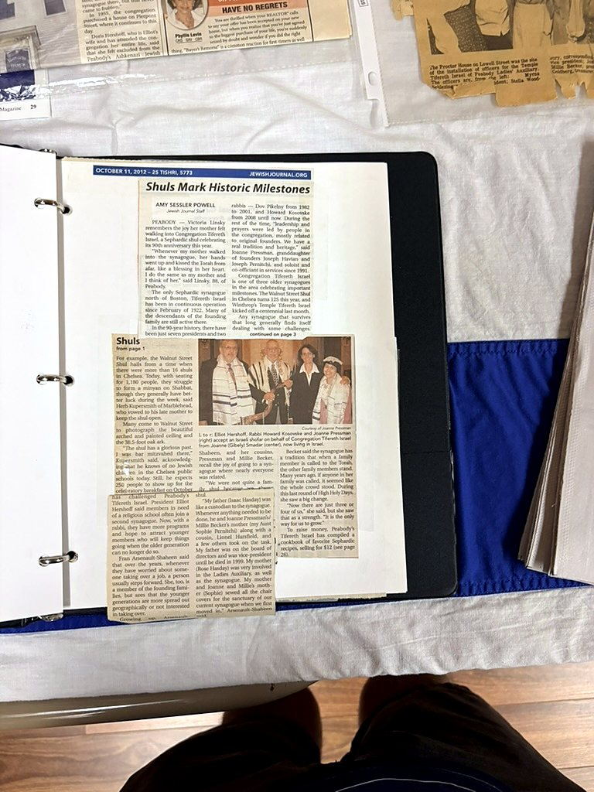

Archive notes
The Jewish Journal feature marks historic synagogue milestones on the North Shore, including Congregation Tifereth Israel’s 90th anniversary.
The scan is preserved here while a complete line-by-line transcription is verified.

The Jewish Journal feature marks historic synagogue milestones on the North Shore, including Congregation Tifereth Israel’s 90th anniversary.
The scan is preserved here while a complete line-by-line transcription is verified.